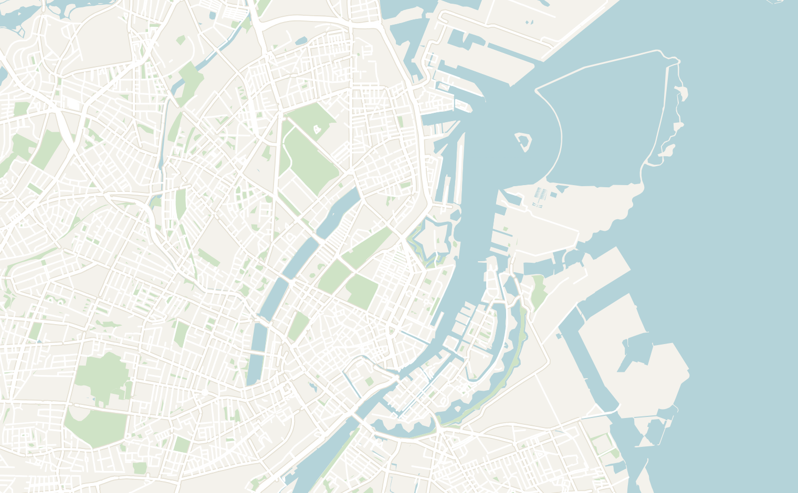
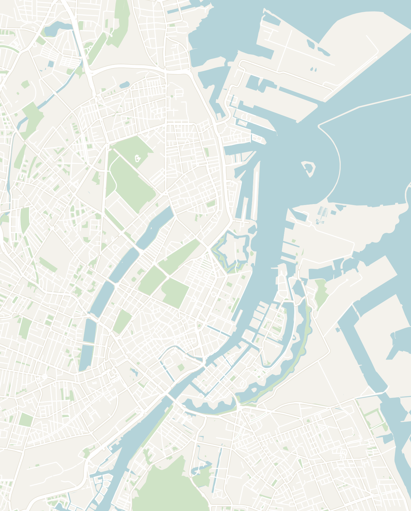

General
Denmark is small, stylish and famously content. It's capital Copenhagen is simultaneously one of the most expensive and one of the most livable cities in the world: colorful canals, cutting-edge design, bikes everywhere, world-class food and a deep sense of hygge (the Danish concept of cozy contentment).
The one catch is that it's genuinely expensive, so I'd keep it a trip here short and focused if you're watching your budget. I'd recommend 2 to 3 days to explore Copenhagen and add on additional days for trips throughout Denmark or a quick day trip to Malmö in Sweden.
- Getting around
- Flights — fly into Copenhagen Airport (CPH), Scandinavia's largest airport. It's just 15 minutes from the city center by metro or train
- Bikes — Copenhagen is one of the world's great cycling cities. Its flat terrain, extensive network of protected bike lanes, and cycling-first culture make renting a bike the best way to explore the city like a local
- Metro & trains — the country has a clean, fully automated metro system which is fast, frequent, and easy to use, with excellent connections across the Copenhagen and to the airport. Regional and S-trains make it just as easy to explore the surrounding area
- Money — despite being a part of the EU, Denmark uses their own currency called the Danish Krone ( and not the euro). Denmark is expensive and almost entirely cashless, so no need to withdraw any Danish Krone unless you're curious
- Food — Danish food was a surprising highlight of the trip. It was fun to try different dishes like smørrebrød (open-face rye sandwiches with various toppings), flaky Danish pastries, pølser (street-cart hot dogs). Copenhagen is home to superb food halls, and the New Nordic movement that gave the world Noma (considered to be the best restaurant in the world)
- Language — Danish is the official language and is mutually intelligible with other Scandinavian languages like Swedish or Norwegian. English is spoken fluently almost universally
Copenhagen
2–3 days recommendedCopenhagen is one of my favorite cities in Scandinavia with colorful canals, world-class design, bike-friendly streets, and an unrivaled café culture. It's one of Europe's most livable cities, combining Michelin-starred restaurants and historic architecture. It's incredibly easy to explore and you'll have no issues getting around as a first-time traveler. I would recommend 2 to 3 days to explore the city.
- Nyhavn — the iconic postcard: a short canal lined with brightly painted 17th-century townhouses, café terraces and old wooden ships (very reminiscent of Amsterdam). The famous Danish writer Hans Christian Andersen lived in along here. The area is genuinely gorgeous in low golden light, and it's the launch point for the canal boat tours, which are the best way to see the harbor and opera house from the water. Grab a beer from a kiosk and sit on the quay with everyone else while watching the sunset
- Little Mermaid — Copenhagen's most famous landmark, inspired by the fairy tale by Hans Christian Andersen. The bronze statue is surprisingly small and often crowded with tour groups, so it's worth keeping your expectations in check
- Kastellet — a well-preserved star fortresses in Europe and still an active military site. Walk the grassy ramparts for views over the moats, historic barracks, and the iconic windmill. It's a far more rewarding stop than many visitors expect.
- Christiania — the "Freetown" called Christiania is one of the most interesting places in Denmark. It is an autonomous, car-free commune founded by squatters in an abandoned military barracks in 1971. To this day, the area still runs on its own rules. It's no surprise that there is a bit of a counter-cultural hippy vibe here with an enclave of hand-built houses, murals, workshops, cheap vegetarian cafés and live music
- When I was there in 2021, Christiania was infamous for drug dealing due to it's separate set of rules from the rest of Denmark. In 2024, the residents themselves cleared out the infamous "Pusher Street" hash trade after years of trouble
- Look out for Green George, a massive wooden statue of a giant troll. It was created in 2019 by world-renowned artist, Thomas Dambo and you'll find similar statues scattered throughout Copenhagen
- Superkilen — a wild, colorful public park in multicultural Nørrebro neighborhood. It is a park filled with abstract modern art and was designed as a celebration of the neighborhood's diversity: it's stitched together from benches, signs, fountains, playgrounds and street furniture collected from around 60 countries
- I particularly enjoyed the Black Square, with its swirling white lines and a Japanese octopus slide. The park was really cool and a great place to stop for photos. It's a short bike ride from the city center and you'll visit a more local, everyday side of the city
- Ny Carlsberg Glyptotek — one of the best museums in the city, built by the founder of Carlsberg (the Danish Beer company) to house his antiquities and particularly French art (Rodin, Degas & Gauguin). The highlight for me was the palm-filled Winter Garden under a glass dome at its heart. There is a little café here where you can sit and enjoy the greenery. It was the perfect stop on the rainy day when I was there
- Rosenborg Castle & King's Gardens — a fairytale Renaissance castle built by Christian IV. Today, it serves as a museum of the royal collections with the crown jewels available to view. It sits in the King's Garden (Kongens Have), the oldest royal garden in the country and a favorite spot for a picnic or a beer on a sunny afternoon. The Botanical Garden and its Victorian glasshouses are also right next door
- If you're here around noon, you can also watch the royal guard marching between here and Amalienborg Palace
- The Round Tower (Rundetårn) — a 17th-century observatory tower where you climb up a wide spiraling internal ramp inside. At the top is a nice view of the old town's spires and red roofs
- Tivoli Gardens — the second-oldest amusement park in the world (opened in 1843) and an inspiration for Walt Disney, set right in the center by the main station. To this day, it still maintains a lot of its old charm. It is a great place to visit if you have children
-
Malmö (Sweden) — just ~40 minutes by train across the Øresund Bridge (the one from the TV series), an easy and rewarding half-day in another country. Wander the medieval square and cobbled old town, walk the modern Western Harbor waterfront and try Swedish food. It's noticeably more relaxed and cheaper than Copenhagen. Bring your passport and check whether ID checks are running at the border. Read my full writeup on Malmö here
- Torvehallerne — the bright glass food hall by Nørreport station, packed with around 60 stalls selling everything from smørrebrød and fresh fish to coffee, cheese, pastries and porridge. It's a greatplace to graze explore way through Danish specialties in one spot
- Broens Gadekøkken (Bridge Street Kitchen) — a harborfront cluster of street-food stalls directly across the water from Nyhavn. It's a relaxed spot for a casual dinner with a harbour view, with everything from tacos to Danish classics plus a bar, and a lovely place to end up on a warm evening
- Restaurant Klubben — cuisine in Copenhagen is very international, but if you're looking to try traditional Danish food then Restaurant Klubben is the spot. Expect the food to be very heavy and hearty
- Smagsløget sandwiches — one of Copenhagen's most popular sandwich shops, known for generously filled gourmet sandwiches made with high-quality Danish ingredients. Expect a line at lunchtime, but it's one of the city's best-value meals
- Noma — I never personally visited, but this wouldn't be a good travel blog if I failed to mention that the best restaurant in the world is in Copenhagen. Noma is famous for redefining Nordic cuisine through hyper-local, seasonal ingredients and an ever-changing tasting menu. Reservations are notoriously difficult to secure and the experience comes with a hefty price tag, but it's a bucket-list meal for serious foodies
- Base yourself centrally in Indre By (the old center) or around Nørreport. These areas are both bikeable to everything and right on the metro. For a hipper, more local base with the best bars and restaurants, look at Vesterbro or Nørrebro. Accommodation isn't cheap in the city, so booking early, or staying just outside the very center, can save a lot


Double-tap to open in Google Maps
Other Places to Consider
Copenhagen is the main place where most tourists visits, but Denmark has a lot more to offer
- Kronborg Castle — the grand Renaissance castle on the narrow sound at Helsingør. It's an easy 45-minute train north from Copenhagen
- The Louisiana Museum of Modern Art — one of the finest modern-art museums anywhere, strung along the wooded coast at Humlebæk about 35 minutes north of Copenhagen by train. The building is as much the draw as the art: low glass corridors opening onto a sculpture park that runs down to the sea. Give it a half-day and have lunch on the terrace
- Roskilde — an easy half-hour train west, best known for two things. The Viking Ship Museum displays five original 11th-century Viking ships raised from the fjord, alongside a working boatyard that builds and sails replicas. The brick cathedral is the burial place of 40-odd Danish kings and queens, a genuinely impressive royal mausoleum. In late June, the town also hosts Roskilde Festival, one of the biggest music festivals in Europe
- Aarhus — Denmark's lively second city, over on the Jutland peninsula (about 3 hours by train from Copenhagen). It's a young, walkable university town with a buzzing food scene and the cobbled Latin Quarter. The headline sights are ARoS, the art museum, and Den Gamle By, an open-air museum of historic Danish houses